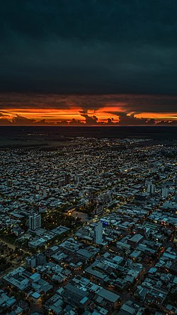
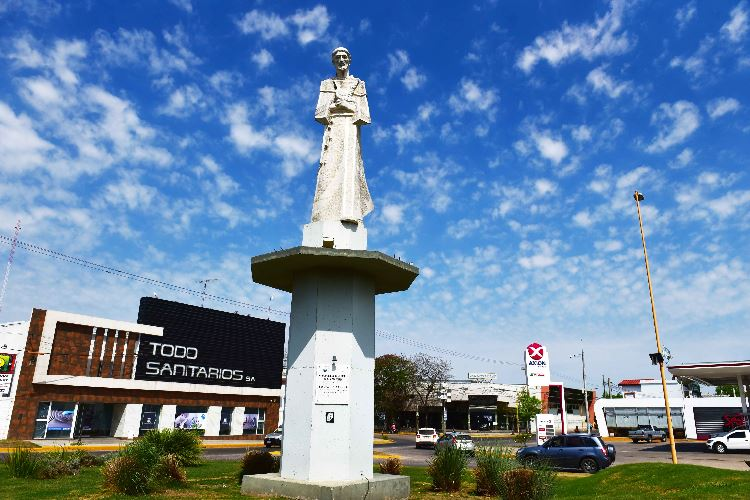

Te damos la bienvenida a San Francisco
San Francisco es una ciudad de la provincia de Córdoba, Argentina, y cabecera del departamento de San Justo.

La ciudad
Se ubica a 206 km de la Ciudad de Córdoba Capital en el este de la provincia
ya 127 km de la Ciudad de Santa Fe en el límite de dicha provincia.
Fundada el 9 de septiembre de 1886, en torno a una estación de ferrocarril
que estaba ubicada en la que hoy es la plaza central de la ciudad.